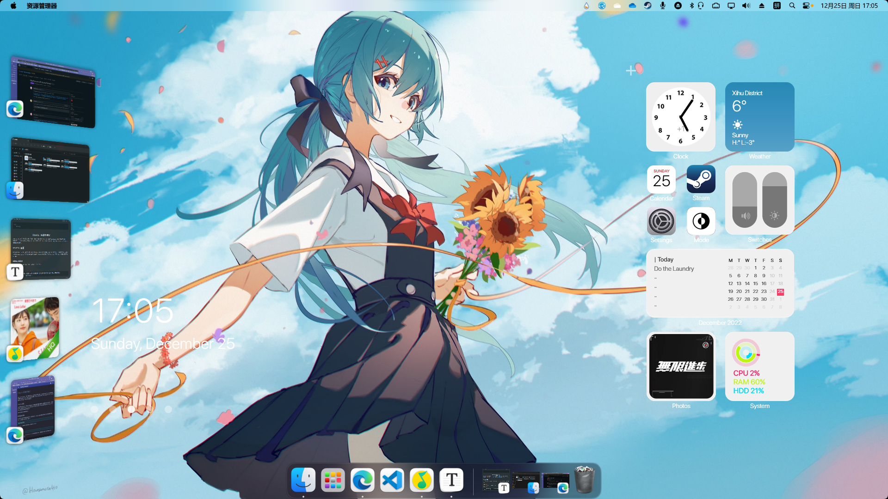
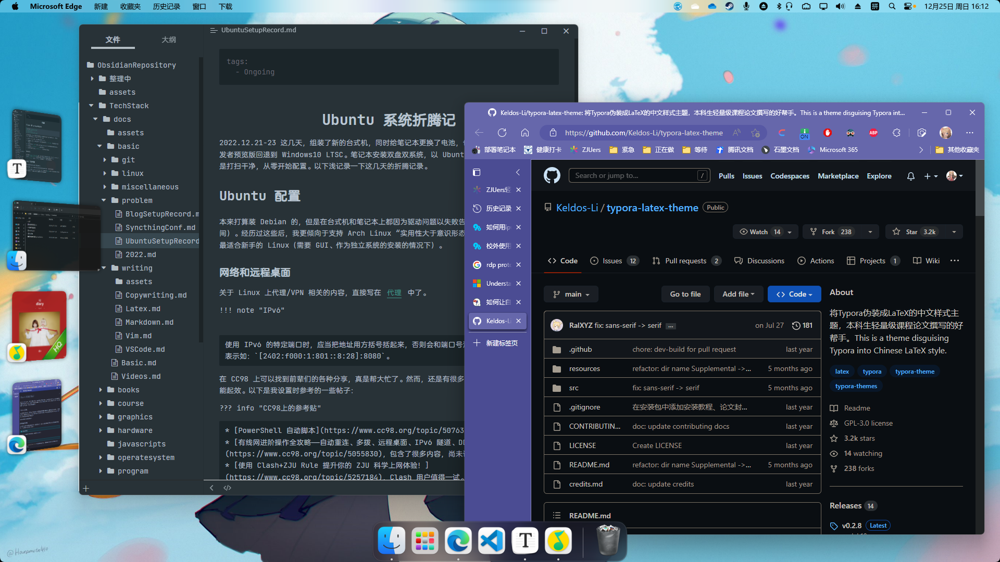

电脑折腾记¶
2022.12.21-23 这几天，组装了新的台式机，同时给笔记本更换了电池，也将系统从 Windows11 开发者预览版回退到 Windows10 LTSC。笔记本安装双盘双系统，以 Ubuntu 作为主系统。两台机子都是打扫干净，从零开始配置。以下浅记录一下这几天的折腾记录。
Ubuntu 配置¶
本来打算装 Debian 的，但是在台式机和笔记本上都因为驱动问题以失败告终（浪费了我半天的时间）。经历过这些后，我更倾向于支持 Arch Linux “实用性大于意识形态”的选择。Ubuntu 果然是最适合新手的 Linux。
网络和远程桌面¶
关于 Linux 上代理/VPN 相关的内容，直接写在 代理 中了。
IPv6
使用 IPv6 的特定端口时，应当把地址用方括号括起来，否则会和端口号混在一起导致错误。正确的表示如：[2402:f000:1:801::8:28]:8080。
在 CC98 上可以找到前辈们的各种分享，真是帮大忙了。然而，还是有很多东西要自己试过才知道能不能起效。以下是我设置时参考的一些帖子：
CC98上的参考贴
- win10校园网自建VPN & 自动重连脚本（PowerShell），实测可用。
- 有线网进阶操作全攻略——自动重连、多拨、远程桌面、IPv6 隧道、DDNS、自建内网穿透……，包含了很多内容，尚未详细研究。
- 在家如何搞学术：远程桌面、ssh、跳板机攻略（针对Win10）
- 使用 Clash+ZJU Rule 提升你的 ZJU 科学上网体验！，Clash 用户值得一试。
- 校外使用rvpn连接内网Windows 10电脑，主要涉及更改默认端口。
- 更改端口：在内网（特别是相同子网）访问时，不需要更改端口。如果出现找不到设备，很可能是因为 RDP 协议的
3389端口被校网出于安全原因禁用了。
至今仍未解决的问题是：
- 通过 rvpn 在校外连接电脑的远程桌面。初步判断为手机端网卡 IPv6 功能不完善（查询是有 IPv6 网址的，但是联不通）。
- 被控端，连接 l2tp 后无法被远程桌面连接，断开后可以。
蓝牙连接¶
blueman
一个管理蓝牙设备的软件 blueman，在 GitHub 有 项目主页，可以通过它监测各个蓝牙设备的连接状况。
首先，需要在 /etc/bluetooth/main.conf 中找到并修改如下值，才能连接蓝牙耳机：
ControllerMode = dual
连接成功后，试听了歌曲感觉音质很差，怀疑是蓝牙编码的问题。Ubuntu 自带 SBC 编码，而现在的蓝牙耳机至少都是 AAC 起步。于是查找资料，了解了一些 Linux 音频系统的知识。
Ubuntu 的音频由 pluseaudio 管理。插件 pulseaudio-modules-bt 为 pluseaduio 提供了 AAC、LDAC 等蓝牙编解码器。但该插件仓库作者已经不再维护，PPA 源也仅支持到 Ubuntu 20.04。查看 Issue 得知作者已经转移到 PipeWire，经过一番查找，我也找到了使用 PipeWire 支持高质量音频编码的博客：在 Ubuntu 21.10 上启用蓝牙 LDAC/AAC/AptX 高质量音频编码支持。
按照博客安装完成后，我的蓝牙设置选项中并无 AAC 编码可选。阅读 Gist：Enable PipeWire on Ubuntu 22.04 发现 AAC 支持需要使用 PPA：pipewire-extra-bt-codecs，按说明完成安装后，就可以选用 AAC 编码了。虽然监控显示蓝牙传输仍只有 30 KB/S，但音质已经好很多了。
参考
- 知乎：如何让Ubuntu系统支持LDAC，APTX，AAC编码（提升蓝牙音质）
- Bilibili：耳机性能基础自测，可以测试你的蓝牙连接性能有多好。
有线连接¶
拆机修理过程中，我弄断了笔记本无线网卡的天线，不得不被迫体验一把 Ubuntu 连有线网络。目前个人尝试下来，GUI 界面最好使用 GNOME 自带的 VPN，CLI 最好使用求是潮的 zjunet。如果会使用 CLI，那么 zjunet 不需要我过多介绍，你能自己了解它的使用方法（阅读 README 和使用 -h）。以下介绍 GNOME 的配置。
首先，Linux 发行版基本都不会附带 L2TP 协议支持，所以必须先用有线联网，或在其他电脑上下载好相关软件包。在 Ubuntu 中使用图形界面的 network-manager 时，需要：
sudo apt install network-manager-l2tp network-manager-l2tp-gnome
安装完成后，重启。在 VPN 界面可以创建 L2TP VPN，网关填写 10.5.1.9。在 PPP 选项中，“身份验证”全选，安全性及压缩仅勾选 BSD 和 Deflate。配置就完成啦！
网关选哪个？
在 L2TP VPN 的网关配置中，应当填写 10.5.1.9 或 10.5.1.10 （玉湖测试通过）。注意，网关和 Windows 中的 VPN 服务器不一样。lns.zju.edu.cn 、 10.0.2.72 和 10.0.2.73 （VPN 服务器的 IP）都是不行的。
CC98上的参考贴
- CC98：2019年ubuntu图形界面连接vpn，不再需要命令行
- CC98：记录一下Linux下有线接校网 王重阳老师的这个配置我试了不行，不知道是什么原因，或许是教师允许使用的协议不同？
杂七杂八的¶
gnome-tweaks是一个用于优化 GNOME 的小工具，我也不知道它能有什么用。lollypop是 GNOME 的一个不错的音乐播放器，颜值比RhythomBox高。- Ubuntu 默认合盖休眠，虽然开盖恢复时间挺快，但恢复蓝牙需要一段时间。如果正在播放音频，就会社死。设置系统处理电源行为可以参考 简书：Ubuntu 笔记本设置合盖不休眠。
- 安装 搜狗输入法 Linux 版，比自带输入法好太多。网站上有安装指南。
tabby终端，目前我见过最好看，同时方便配置的跨平台终端，甚至提供了 Web app。GNOME 自带的终端在使用 zsh 的 powerlevel10k 主题时可能出现问题，tabby 则对各种功能都提供了完善的支持。在我的 Ubuntu 上运行时，资源占用也不高。
Windows 11 美化¶
Windows 当然也需要美化啦。在网上看过各式各样的美化效果，最后还是觉得：美化的尽头是 macOS。
想在 Windows 上获得最好的 dock 体验，可以在 Steam 购买 MyDockFinder，体验非常好，动画流畅。
如果希望让桌面丰富一些，可以安装 Rainmeter 的 Big Sur RC1。
Weather 组件无法使用
作者的 apikey 似乎过期了，因此组件显示不了数据。在 UserVariables.inc文件中将 apikey 更改为 21d8a80b3d6b444998a80b3d6b1449d3 就可以使用了，当然这一密钥也随时面临无法使用的情况。密钥来源：Weather.com API Access Denied。
我的目前的台式机美化效果如图：


硬件部分¶
配置¶
这个台式机是因为看上了华硕的 AP201 机箱配的，具体配置如下：
- 机箱：华硕 AP201
- 主板：微星 B66OM 迫击炮 WIFI DDR4
- 处理器：Intel Core i5-12400
- 内存：镁光 16 GB 普条
- 电源：酷冷至尊 GX750 白色版
- 固态硬盘：三星 980 PRO 500 GB + MZVLW256HEHP
- 机械硬盘：Hitachi 4 TB x2
- 散热器：九州风神 AK400 HW
第一次装机¶
装机前，请务必看一遍硬件茶谈的装机视频：【装机教程】全网最好的装机教程，没有之一。该视频几乎囊括了所有细节，比如内存插槽可能只有一侧有锁扣，这正巧是我在安装时遇到的问题。
- 查看机箱的说明书，它一般会告诉你：对于这个机箱，整机的各个组件应当按照什么样的顺序组装。
- 在主板上安装 CPU、内存、SSD 和风冷散热器。动手前请完整阅读各部分的安装说明，比如 SSD 全长是不需要安装卡扣的，我就为此疑惑了半天。
- 将各组件装入机箱。在做每一步前，回看硬件茶谈的视频，有一些细节还是需要注意，比如主板可能需要斜插放入机箱，我垂直放进去的时候对不上 IO 挡板。
- 确保 IO 面板的各个接口线缆安插到位，要用力试试。我第一次开机点不亮就是因为 HDMI 线没有完全插入。
- 打开电源，尝试点亮。